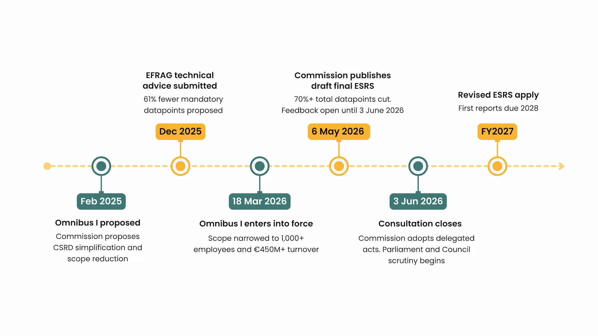

Introduction
On May 6, 2026, the European Commission published its draft final revised ESRS - the near-final version of the standards that companies will actually report against from FY2027.
This is a significant moment. What started as EFRAG's technical advice in December 2025 has now been reviewed, adjusted, and published by the Commission itself as a draft Delegated Act. A one-month public feedback period is open until June 3, 2026. After that, the standards will be formally adopted.
The headline numbers are significant. Total datapoints reduced by over 70%. Mandatory datapoints cut by over 60%. Reporting costs per company expected to fall by more than 30%.
But since the simplification process began, the same question has come up consistently in conversations with sustainability teams, CFOs, and boards across Europe: does this mean we can slow down?
The short answer is no.
This blog covers the full journey - from EFRAG's December advice to the Commission's May 6 publication - what has actually changed, what has not, and what the smartest organisations are doing right now.
The Journey to Here: A Quick Timeline
To understand where we are, it helps to see how we got here. The simplification of ESRS did not happen overnight - it has been building for over a year.

- February 2025 - European Commission publishes Omnibus I, proposing significant simplification of CSRD including narrowed scope and reduced reporting burden.
- December 2025 - EFRAG submits technical advice to the Commission, proposing 61% reduction in mandatory datapoints and removal of all voluntary disclosures.
- March 18, 2026 - Omnibus I enters into force. CSRD scope officially narrowed to companies with 1,000+ employees and 450M+ euros in turnover.
- May 6, 2026 - European Commission publishes its draft final revised ESRS, based on EFRAG's advice but with targeted adjustments. Public feedback open until June 3, 2026.
- After June 3, 2026 - Commission formally adopts the delegated acts. Parliament and Council scrutiny period of two months, extendable by two more months.
- FY2027 - Revised ESRS apply. First reports due 2028.
What the Commission Published on May 6
The May 6 publication is not just a technical update. It is the clearest signal yet that the final standards are weeks away - and that the time for waiting is over.
The Commission's draft final ESRS is not identical to EFRAG's December advice. The Commission made targeted adjustments, in their own words, to "further ease the reporting burden without undermining the CSRD's policy objectives."
Key numbers from the Commission's draft:
- Total datapoints reduced by over 70%
- Mandatory datapoints cut by over 60%
- Reporting costs per company expected to reduce by more than 30%
- Standards are shorter, clearer, and introduce new flexibilities for companies
Alongside the revised ESRS, the Commission also published a voluntary reporting standard for smaller companies - those not subject to mandatory CSRD requirements. This voluntary standard introduces an important new protection: a "value chain cap" that limits what in-scope companies can ask of their smaller supply chain partners.
The public feedback period is open until June 3, 2026 via the European Commission's Have Your Say portal. After that, the Commission will adopt the two delegated acts as soon as possible, before transmitting them to the European Parliament and Council for scrutiny.
What Actually Changed
The numbers are real. This is a genuine reduction in reporting burden - not a cosmetic adjustment.
- Total datapoints cut by over 70% The original ESRS contained over 1,000 datapoints. The Commission's draft final version reduces this by more than 70% in total, and over 60% in mandatory datapoints - focusing on the disclosures that matter most to investors and regulators.
- Voluntary disclosures removed The original ESRS included both mandatory and voluntary disclosure requirements. The simplified version removes voluntary disclosures entirely. What remains is what is required, nothing more.
- Double materiality streamlined The double materiality assessment process has been simplified, with a clearer top-down approach introduced. The concept itself - assessing both how sustainability affects the business and how the business affects the world - remains fully intact and mandatory.
- Reporting costs expected to fall The Commission estimates that the revised standards will reduce reporting costs per company by more than 30%. For sustainability teams managing complex, multi-market disclosure obligations, that is a meaningful difference.
- Timeline now clear The draft Delegated Act is in public consultation until June 3. Formal adoption follows. Companies will apply the new standards from FY2027, with reports due in 2028. Early voluntary adoption for FY2026 remains possible.
- Scope narrowed by Omnibus I The Omnibus I Directive, which entered into force on March 18, 2026, has raised the thresholds for which companies fall within CSRD scope, removing a significant number of companies from mandatory reporting obligations.
Who Is Still In Scope
This is where many organisations have been confused - and where getting clarity matters most for planning.
Under the revised Omnibus I thresholds, CSRD now applies only to large undertakings with more than 1,000 employees and net annual turnover exceeding €450 million. This is a significant increase from the original threshold of 250 employees.
In practical terms, here is who is affected:
Still in scope:
- EU companies with more than 1,000 employees and over €450 million in annual turnover
- Non-EU companies generating over €450 million in EU turnover, with an EU subsidiary or branch generating over €200 million
- Wave 1 companies - large public interest entities that began reporting for FY2024 - continue to report under the original framework
No longer in scope:
- Listed SMEs - fully removed from CSRD scope
- Companies that qualified as "large" under the original Accounting Directive definition (250 employees) but do not meet the new 1,000-employee threshold
- Roughly 42,000 companies have been descoped from CSRD under the revised thresholds
An important new protection on value chains: The voluntary standard introduced alongside the revised ESRS includes a "value chain cap." CSRD in-scope companies cannot require value chain partners with 1,000 employees or fewer to provide information beyond what is set out in the voluntary standard. It is a meaningful protection for smaller suppliers. However, it does not eliminate value chain data requests entirely - it caps them at the voluntary standard level. If your large customers or suppliers are still in scope, their data needs will still flow down to you.
What Has Not Changed
This is the section I want every sustainability team to read carefully - because this is where the real work still sits.
Despite the significant reduction in scope and datapoints, the foundations of CSRD remain fully intact.
- Double materiality is still mandatory. The simplified ESRS have streamlined the process, but the concept itself has not changed. Companies in scope must still assess both how sustainability issues affect the business financially, and how the business affects people and the environment. This remains the most demanding and judgement-intensive part of CSRD preparation, and no amount of simplification changes that.
- Third-party assurance is still coming. The requirement for independent assurance of sustainability disclosures has not been removed. The quality bar for data is not getting lower. Auditors will scrutinise the same things they always were - data traceability, methodology documentation, and consistency between years.
- The expectation of audit-ready data remains. Fewer datapoints does not mean less rigour. If anything, with fewer places to hide complexity, the data that is disclosed will face more scrutiny, not less. Structured, traceable, consistently collected data is still the foundation of credible CSRD reporting.
- Investor and market expectations have not softened. Investors are more concerned about the ESRS simplification than companies are - worried that reduced disclosure means reduced visibility into ESG performance. Companies that voluntarily disclose more than the minimum will be better positioned with investors, lenders, and procurement teams regardless of what the regulation requires.
- Value chain pressure continues - but is now capped. Even companies that have been descoped from mandatory reporting will face ESG data requests from customers and suppliers who remain in scope. The new value chain cap limits these requests to what is set out in the voluntary standard, but it does not eliminate them. The commercial pressure to provide ESG data remains regardless of regulatory status.
What the Smartest Organisations Are Doing Right Now
In conversations with sustainability teams across Europe, a clear pattern is emerging between the organisations navigating this well and those that are not.
The ones struggling are the ones that treated the Omnibus as a reason to pause. They are waiting for the final simplified ESRS before doing anything. They are rechecking whether they are still in scope. They are in a holding pattern.
With the Commission's draft now published and the consultation closing June 3, that window is narrowing fast. The final standards are no longer a distant prospect. They are weeks away from formal adoption.
The ones getting ahead made a different decision. They recognised that the work required to build credible, audit-ready ESG disclosures does not change materially whether reporting against 1,000 datapoints or 400. The data infrastructure, the governance structures, the internal controls - these take time to build regardless of which version of ESRS ultimately applies.
Specifically, here is what they are doing:
- They completed or refreshed their double materiality assessment. Rather than waiting for the simplified guidance, they used the period of regulatory uncertainty to do the foundational thinking - identifying which sustainability topics are genuinely material to their business and their stakeholders.
- They invested in data infrastructure. They connected their sustainability data to the systems where it actually lives - ERP, HSE, energy management - rather than continuing to manage it in spreadsheets. This work pays dividends regardless of which framework they report against.
- They built for multiple frameworks simultaneously. The organisations managing CSRD, GRI, and internal reporting separately are creating unnecessary complexity. The smartest teams built one underlying data structure that serves all of their reporting obligations - reducing duplication and future-proofing against further regulatory change.
- They treated simplification as an opportunity to improve quality, not reduce effort. Fewer datapoints means the disclosures that remain carry more weight. They used the simplification to focus on getting those disclosures genuinely right - not just compliant.
The gap between these two groups will be visible in 2028 when the next wave of reporting begins. The organisations that used 2026 and 2027 to build their foundations will report with confidence. The ones that waited will scramble.
Conclusion
ESRS simplification is real. The Commission's draft final standards represent a genuine and significant reduction in reporting burden - over 70% fewer total datapoints, 30% lower reporting costs.
But simplification is not the same as irrelevance.
The companies that will lead on sustainability in the next five years are not the ones that did the minimum required by regulation. They are the ones that used the regulatory pressure of 2024 and 2025 to build something genuinely useful - data infrastructure that supports better decisions, not just better disclosures.
The consultation closes June 3. Formal adoption follows shortly after. FY2027 reporting begins sooner than most teams are ready for.
The question for every sustainability leader right now is not "are we still in scope?" It is "are we building something that will hold up - to auditors, to investors, to customers, and to the market expectations that are moving faster than the regulation?"
Simpler standards require better judgement. Not just less data.
If you are navigating CSRD readiness and want to understand what structured, audit-ready ESG data infrastructure looks like in practice, we would be glad to share what we are seeing. Feel free to reach out.
Frequently Asked Questions
The European Commission published its draft final revised ESRS - the near-final version of the sustainability reporting standards that companies will report against from FY2027. This is based on EFRAG's December 2025 technical advice but includes targeted adjustments made by the Commission. A one-month public feedback period is open until June 3, 2026, after which the Commission will formally adopt the standards as a Delegated Act.
ESRS simplification refers to the revised European Sustainability Reporting Standards developed by EFRAG and now published in draft final form by the European Commission. The revised standards reduce total datapoints by over 70%, cut mandatory datapoints by over 60%, remove all voluntary disclosures, and are expected to reduce reporting costs per company by more than 30%. They apply from FY2027, with optional early adoption for FY2026.
Under the revised Omnibus I thresholds, CSRD applies to EU companies with more than 1,000 employees and net annual turnover exceeding 450 million euros. Non-EU companies generating over 450 million euros in EU turnover with an EU subsidiary generating over 200 million euros are also in scope. Listed SMEs are no longer required to report.
Yes. Double materiality remains mandatory under the simplified ESRS. The process has been streamlined and a clearer top-down approach has been introduced, but companies in scope must still assess both financial materiality and impact materiality as the foundation of their CSRD disclosures.
No. While the simplified ESRS reduce the number of required datapoints, the core foundations of CSRD remain intact - double materiality, third-party assurance, and audit-ready data. With the Commission's draft now published and formal adoption expected within months, the window to prepare is narrowing. Companies that pause preparation risk falling behind when Wave 2 reporting begins for FY2027, with reports due in 2028.
Alongside the revised ESRS, the Commission published a voluntary reporting standard for smaller companies. This standard includes a "value chain cap" - a formal limit that prevents CSRD in-scope companies from requiring value chain partners with 1,000 employees or fewer to provide information beyond what is set out in the voluntary standard. It is a meaningful protection for smaller suppliers, but it does not eliminate ESG data requests from larger customers entirely.
The Commission's May 6 publication does not address ISSB alignment explicitly. Companies operating across jurisdictions should continue to treat ESRS and ISSB as separate frameworks for now and monitor further developments.
Companies should refresh or complete their double materiality assessment, invest in structured data collection systems, and build a single data infrastructure that serves multiple reporting frameworks. With the Commission's draft final ESRS now published and formal adoption weeks away, waiting is no longer a viable strategy.
Companies descoped from mandatory CSRD reporting are no longer legally required to publish a sustainability report. However, they may still face ESG data requests from customers and suppliers who remain in scope, and investor and market expectations around ESG transparency continue regardless of regulatory status.